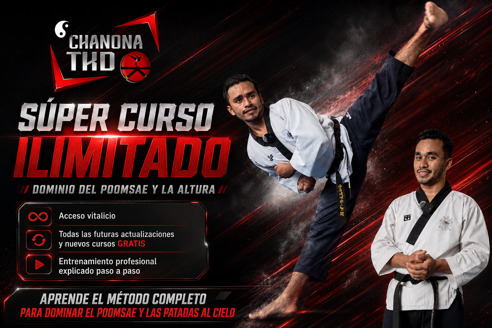

Material organizado por formas, líneas y movimientos.
APRENDE EL MÉTODO
El conocimiento, organizado para volver a él cuando quieras.
¿Quieres detenerte en cada detalle técnico, repetir una explicación y aplicar el Método ChanonaTKD a tu propio ritmo? La Academia Digital reúne su colección completa de clases y explicaciones en un solo lugar, con acceso de por vida.

Academia Digital ChanonaTKDEstudia · Pausa · Repite · Practica a tu ritmo
ESTUDIA A TU RITMO
Dejar de buscar explicaciones dispersas.
La Academia está pensada para que puedas consultar un movimiento, detenerte, comprenderlo y volver a practicarlo.
Conceptos y ejercicios para comprender la ejecución técnica.
Explicaciones sobre cómo se relacionan las capacidades físicas y el movimiento.
Estudia, pausa y revisa las explicaciones cuando lo necesites.
EXPERIENCIA DE ENSEÑANZA
¿Repites ejercicios, pero no entiendes por qué te estancas?
A veces el siguiente avance empieza por comprender un detalle. Explora tres preguntas sobre flexibilidad, pateo y Poomsae para conocer mi manera de explicar la técnica. Las tres clases son una muestra de enseñanza; puedes consultar el programa sin terminarlas.
Clase 1 de 3FlexibilidadCLASE GRATUITA
ACADEMIA DIGITAL CHANONATKD
Un solo pago. Toda la Academia, de por vida.
Accede a la colección completa de clases y explicaciones para estudiar técnica de Poomsae, pateo, flexibilidad y biomecánica aplicada. Puedes pausar, repetir y practicar cada contenido cuando lo necesites.
Es la opción para quien quiere estudiar por su cuenta, consultar movimientos concretos o regresar a las explicaciones sin depender de un calendario de sesiones.
Acceso vitalicio con compra individual. No incluye planificación ni sesiones personalizadas, y las tres clases nuevas semanales corresponden exclusivamente a la membresía System.
Dentro de Academia puedes detener una explicación para revisar una postura, practicarla y continuar cuando estés listo.
Pago único$1,950 MXN$149 USD · €139 EURPrecio habitual aprobado, sin mensualidades.
Acceso de por vida a toda la Academia Digital ChanonaTKD.
Quiero acceder a la AcademiaUna compra individual; estudia a tus horarios.Preguntas frecuentes
¿La Academia tiene mensualidades?
No. La compras con un pago único de $1,950 MXN, $149 USD o €139 EUR, según la moneda correspondiente, y conservas acceso de por vida.
¿Puedo ver las explicaciones cuando quiera?
Sí. Estudia el contenido a tu ritmo: pausa, repite y practica tantas veces como necesites.
¿Recibiré las tres clases nuevas cada semana?
No. Las tres clases nuevas semanales de Poomsae, pateo y flexibilidad corresponden a ChanonaTKD System. La compra individual de Academia incluye su colección completa con acceso vitalicio.
¿Incluye sesiones y correcciones individuales?
No. Si necesitas un plan individual, sesiones y correcciones directas, revisa los entrenamientos personalizados.
¿Cuál es la diferencia con la Academia incluida en System Full?
En System Full, toda la Academia está disponible solo mientras esté activa tu membresía. Al comprar Academia individualmente, el acceso es de por vida.
Estudia el método a tu ritmo.
Te compartiré cómo acceder a la colección completa con un solo pago.
Quiero acceder a la AcademiaOTRAS FORMAS DE COMENZAR